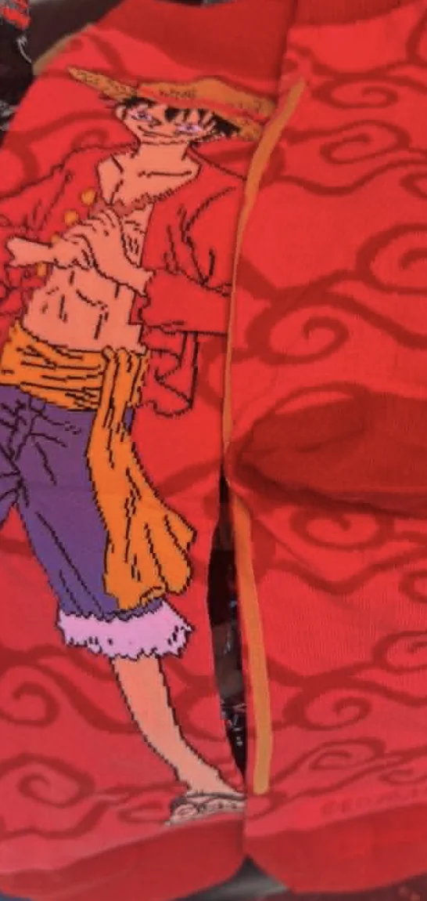

Shoutouts
Congrats to “Top of the Rope” for PRing in the half marathon. 1:39 is really good and a clear testament to how much you’ve been training! Looking forward to seeing what the Chicago marathon brings!
Happy birthday “The Big YT short”. You’re a very fun person and it was a real privilege to put a bunch of edamame in a box with ya.
Monday
Since I don’t have mines to go to today I got brunch with “Top of the Rope” over at Peacock Pansy. The Ube Pancakes continue to hit just as always. On a whim afterwards, “Top of the Rope” wanted to take me to IKEA to get some more cooking supplies. Apparently when you try to chop an onion with the backside of a plastic fork it really makes an impression on people and as a result I’ve had 3 different friends suggest I go to IKEA with them.
While we were there I got a chef's knife, a cutting board, some kitchen towels, and possibly something else as well. This does definitely expand my options when cooking. I do wish Ikea bags were less clunky to carry though. The cutting board didn’t fit in there particularly well.
We then went to Chinatown in search of a meat thermometer or a can opener (“Top of the Rope” insisted this one was necessary while I was perfectly happy to use gravity or a knife). We didn’t find either of those things but it was funny doing laps in the same store in Chinatown hoping they would magically show up.
After that I went to Kogi Gogi with “The Quant”. Surprisingly we were only able to get through 3 rounds of meat which is a record low for us. Maybe I ate too much beforehand? Maybe I’m getting old? I miss the time when I could do 5 rounds. Granted I felt sick after that but still. One of these days I need to stop doing that “optimizing for enjoyment” nonsense and really just try to shove as much meat in the mouthhole as possible. Enjoyment is temporary and numbers are forever.
Then I went to a BBQ hosted by “The Orchestra” along with “The Mosher,” “That’s Nuts,” and “The Finer things,” and some other folks that don’t have newsletter nicknames. To be honest I’m not sure how I should refer to them. Maybe the first letter of their name? Their initials? I’m not sure. Because I was full from Kogi Gogi I didn’t really eat at the BBQ but it was nice to see all the Canadians. Two of the people there just got married and from some of the pictures I saw it looked like the wedding was really fun.
Tuesday
Once I bazeled my last run I went to government class to take my final exam. The exam had some physical and digital components. For the physical components I had to draw the map we had seen in class of how the political system in SF works from the people -> (elected positions like mayor, assessor-recorder), commissions, departments, hierarchy of law, supersystem of federal state and local governments), and an online multiple choice quiz. Not that I cheated of course but I realize in retrospect it would have been pretty easy since I could have just looked up the notes on my phone especially for the physical part since you could take the components in any order.
In order to pass you have to score a 90% or higher on the exam. When I walked out I thought I did OK but felt a bit borderline. There were a few things I messed up on but it was hard to say whether I would be at the cutoff or not. That being said though I realized after half an hour I wasn’t magically gonna get any smarter so I figured I would walk out and enjoy the nice day.
Wednesday
On my way to the place of business I’m about to cross the street when I see someone on the curbside with their bike. It looked like they got into a bike accident and I went to ask them if they are OK and as I heard them talking and saw them up close I realized they are one of my old coworkers from a previous job I had. Not my most recent job but the one before that. I get him some water from a cafe and talk him through the after shock. Unfortunately I don’t remember his exact recollection of the events leading there but thankfully aside from a bit of bleeding he seemed ok with nothing broken. We take the chance to catch up and laugh at the absurdity of bumping into an old coworker in this particular way. After a little bit he says he’s good and is about to get back on the bike to head back into his own place of business. I kinda wish I stayed til I saw him ride off but I know he bikes a lot and I figured he knew himself well enough to know what he can do.
Once the business had businessed I went to Midnight Runners with “The Enabler,” “La Tacqueria Royalty,” “Breaking it Down,” “S,” and “J”. It was S’s first time doing a Midnight Runners event, congrats to her! The one downside was we ran in The Marina today so the streets were a bit cramped. On the plus side I saw a quincinera as we were running through which was new. Between the miles there were bootcamp exercises which normally I skip because I think they’re kinda pointless but when I saw “La Tacqueria Royalty” doing them by himself with nobody else in our group doing it I sighed and broke my own rule and did it alongside him. What were we even doing anyway? I think it was leg lifts or something to that effect.
After the run we got dinner at Hinodeya. I left a Yelp review only to find out that “La Tacqueria Royalty” had trolled me by making me think he disliked the ramen he actually liked. I didn’t realize this til a couple days later when I got a comment from the owner thanking me for the review and apologizing for the aforementioned ramen. One of my rules with Yelp reviews is I don’t lie and I certainly don’t say food is bad when it’s not so I had to commit the Yelp reviewer version of seppuku and remove the review. I think now I understand how feudal Japanese samurais felt when they disappointed their masters. This is the first time I ever actually had to remove a Yelp review which was sad but it had to happen. Next time I will make sure I don’t get troll information before posting the review.
Thursday
In the middle of doing a forward pass I found out that I passed my government class which was fun. After doing more forward passes I went to a celebratory meetup at a local bar with some of my other classmates and the instructor. While I was there the instructor asked me what I wanted to do next now that I took the class. I told him that in all honesty compared to some of the other students in the class I’m not that ambitious. I know some people have gone on to work for city hall or work in govtech but really I just wanted to be a more informed voter.
He did mention that some people have taken the class not knowing what they wanted to do afterwards but found interesting things later. We’re going to be having a more formal graduation ceremony in a couple months where I can meet other alumni of the class along with people who work in government now including a staff member of the mayor who handles mayoral commission appointments and I’m excited to meet these people and see what options could be available. I don’t want to quit my job or anything like that but if there are other opportunities that I can do like any other hobby which align with my interests and values then I could be open to it. Maybe I could serve on some low effort commission for example. That could be kind of interesting.
Afterwards I went to bar night with “The Philosopher,” “The Orchestra,” “That’s Nuts,” “The Mosher,” “The Juggler,” and “Hamajang”. Well today the focus was more on the burgers the restaurant had so perhaps calling it burger night this week would be more apt. Some of the people were doing challenges to eat a burger in the fewest bites possible with the record being 5 I think.
Friday
Once I finished putting the ball in the hoop I went to a bar crawl hosted by “The Politician”. This bar crawl is a bit bittersweet as it’s the last time I”ll see “Not a Matcha Bitch” in a while. I’m glad I got to see him off before he goes on to do great things at UCLA. He snapped a candid picture of me which is really funny
Also at the bar crawl was “Top of the Rope,” “The Notetaker,” “The Fisherwoman,” and “Sustainably Fashionable”.
The bar crawl started off at Northbeach’s finest, April Jean Grant. While there I saw some guy who is apparently on the 49ers named Jake Tonges. The reason I know he is on the team is because one of the other people at the bar crawl went to high school with him. I’m glad he turned out to be on the 49ers and not working in tech sales like I first thought when I saw a really tall guy at a bar. Unfortunately this place started to get real crowded and hard to hear so me, “The Fisherwoman,” and “Sustainably Fashionable” hit the next bar on the list a bit early.
The next bar happened to be Savoy Tivoli which was a crowd favorite from last year. When we first got to the bar I had a bit of an interesting interaction where I spent a little bit too long glancing at a guy who I thought looked familiar but never actually met. He asked if we had seen each other before and I said no but asked if his name was Rohan and it turned out it was! I guessed that because he looked like someone else I knew which was a pretty funny coincidence. He was with another guy and "Sustainably Fashionable” was able to guess that guy’s name which was funny. It turns out they were here because one of their friends is performing in a band that’s playing here. They were joined by one of their female friends who I thought was pretty cute and apparently I met at a hot chocolate crawl which must have been way back in the day.
When the band plays, me and “The Fisherwoman” hang out near them for a bit and try chatting them up but they don’t seem very receptive. The woman is doing a bit of swing dancing with one of her friends during one of the songs and “The Fisherwoman” asks if she can be taught how to swing and the woman abruptly says no which definitely wasn’t the friendliest thing to have said. After that we don’t really try to make conversation with them anymore.
We chatted with a bunch of other people there, which was nice. I do think there are more people here than the last time the bar crawl was at Savoy Tivoli though because once again it is hard to hear people.
Actually I’m gonna use this as a springboard to rant about something unrelated. Why is it that any kind of social gathering there always has to be music playing. I get that at bars and stuff. Maybe you want to dance but I’m being more general here. I want to normalize socializing more without the need for music because it feels unnecessary to me. I say this in part because music can sometimes be the reason why it’s hard to hear people and I don’t like that.
Ok rant over back to the night. After Savoy Tivoli me, “The Fisherwoman,” and “Sustainably Fashionable” went to a cafe where it was easier for us to hear each other and chatted for a while.
Saturday
When I woke up the cloudy weather made me not wanna go to Marina Run Club. Instead I decided to be lazy and take a walk before going to trash pickup.
I went to trash pickup afterwards with “The Notetaker” and some others. One of the people I met at trash pickup today has a job working for the Hurricanes, a North Carolina hockey team that is going to be in the Stanley Cup next week. She gets to travel there and has a special seat for the games which is fun. She did say overall the job sucks though but on paper it sounds great if you don’t pry into the details too much.
Afterwards I went to IKEA with “The Awepartment” to get more things. Originally I thought we were just going to get a meat thermometer and instead we got a pan specifically for searing, a plastic cutting board (for meats), a whisk, and a garlic press. “The Awepartment” bought the searing pan as a birthday present which was really nice :D.
After a bit of lunch at IKEA and learning that Microsoft may be dropping some exciting things I went to a memorial birthday picnic for “The Climber”. Long time readers may remember that I had a friend called “The Climber” who tragically passed away last year (https://trashtalesnewsletter.github.io/trash_tales_newsletter/posts/episode-41.html). Today would have been his 28th birthday so “Sergeant Sassy” organized a picnic in his honor. Originally I thought calling it a good time felt strange given the circumstances, but ultimately I realized he’d be happy to see us all having fun, bringing fruit snacks, and hanging out in his honor. So yeah, I will proudly say it was a good time. He was also into committing to the bit and I like to think he’d have found it funny that I showed up to the picnic straight from IKEA with all my random stuff. And since “Sergeant Sassy” apparently also wanted to take me to IKEA, this was a good way of showing her that I’m making progress.
Later I went to Detour with “The Quant”. For whatever reason the ATM there refused our debit cards so we scraped by on whatever cash “The Quant” had to play games. When that ran out we went for a walk and hung out. While stopping by Duboce Park we saw they were apparently doing an outdoor screening of Jurassic park.
Sunday
I did trash pickup today with “The Ravenkeeper,” “The Notetaker,” “The Menace" and some others. After the pickup “The Raja of Rhythm” came by and gave me a really fun birthday gift! One Piece socks!

Then I dragged everyone to try this matcha guava drink over at Ceré tea. I just learned that that sort of drink existed earlier today and I really wanted to try it. I quite enjoyed it. I love guava and I honestly don’t find enough drinks out there that have it!
Afterwards I hung out with “The Ravenkeeper” and some of her friends in Dolores a bit more where I learned that apparently the Six Flags in St. Louis is really good. I’ve been there twice before but I never actually went to the Six Flags which is a darn shame.
Later I went to a murder mystery birthday party for “The Big YT short” along with “The Enabler,” “La Tacqueria Royalty,” “function(get_rid_of_cancer),” “Tightly Knit,” “Breaking it down,” “Always up for a disc-ussion,” and a bunch of other Googlers. We go to a community space and a company helps us run a murder mystery. Traditionally in these sorts of events everyone gets a character and we all act out the character, however since “The Big YT short” is an incredibly popular man there weren’t enough characters to go around for everyone so instead maybe about 9 of us got a characters and everyone else knew all the info about some of the characters depending on where we were sitting. To be more clear about that everyone was sitting at an assigned seat in a table of about 6 or so people and if you were at the same table as someone who was a particular character you knew all the information of that character.
The premise of this scenario was that we were all at a Billionaires Gala. As we were sitting down and talking, someone who helps run the game started talking with us and asked how we were doing. I made some small talk and said, "Fine, how about you?" and she responded “Oh just doing my job?”. Originally I thought she was being serious and I responded “What’s the coolest part of your job?”. Once she said “Oh I can’t decide between cleaning up after billionaires and the low pay” my mind immediately realized she was in character and I responded in turn. I jokingly gave her the 50 turkish liras I had in my wallet as a donation towards her hopes and dreams and that if I help charity cases I get a tax writeoff.
Shortly thereafter I was given a character, one Reginald Sawbucks III. My character is meant to be a billionaire who thinks he’s better than everyone else and wants to capitalize on the murder that happened to become president of the billionaires club. The best part of playing this guy was that I got to proudly proclaim that the dead guy (former president of the billionaires club) sucked and now I can be president which was really fun. I added my own little take that this guy calls himself God’s chosen Billionaire just for some extra panache.
Canonically my character wouldn’t really care about solving the murder “Would you care how your trash is taken out?”. I will admit that with 35 people running around the majority of whom weren’t characters, I did find it a little overwhelming to piece together everything so I figured I’d lean more into my character and go around telling people how much they sucked compared to me and how I should be president of the billionaires club instead. It’s what Sawbucks would have wanted.
As part of the setup a detective (one of the people helping to run the came) came and “deputized” us all to investigate the murder by having us spin around 3 times. That led to my favorite oneliner I gave when the detective was interviewing me as a potential suspect and I cited the ridiculousness of that and told her that clearly we’re getting what we aren’t paying for here.
Towards the end each table had to figure out who the murderer was based on the information given. To be honest I got it completely wrong but thankfully “The Enabler” and a couple others at our table were correctly able to figure out and we did so with the most detail so our table got the detectives of the night award.
They gave different awards including best performer, detectives of the night, and a couple others. One of the awards they said they don’t normally give is for best method actor which I got! They said they really liked my portrayal of the billionaire who thought he was better than everyone else which means that those 50 turkish liras were incredibly well spent.
Oh and before I forget I also got “The Big YT short” a birthday card where he is playing tennis with a robot version of “La Tacqueria Royalty”. The robot part is an inside joke whose origins I know but can only be told by permission of Ethiopian nuns who I don’t care to poke at right now so I will not elaborate for the time being. I do know that the joke exists though.